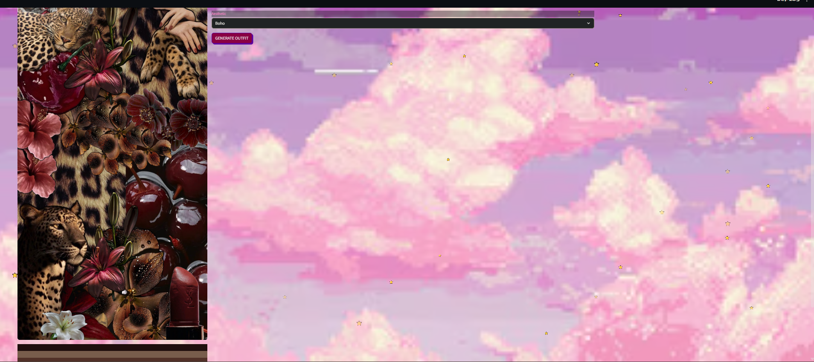
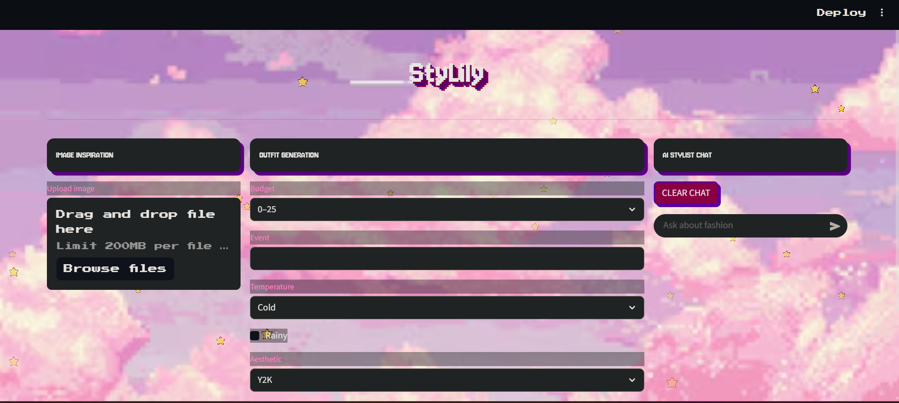

StyLily: Your Personal AI Closet Assistant
Overview
StyLily is an AI-powered personal styling application that turns fashion inspiration into personalized outfit ideas. Users can upload an image to identify its fashion aesthetic and extract its dominant colours, then combine those visual cues with their budget, event, and weather preferences to generate a complete outfit and relevant shopping suggestions. The application also includes an interactive AI stylist chatbot for conversational fashion advice. This application got an honourable mention under the use of Google Gemini category!
The problem
Finding an outfit is not always as simple as finding a piece of clothing that looks good. People often start with an inspiration image, but translating that image into a coordinated, wearable outfit can mean searching across multiple stores, identifying the aesthetic, matching colours, and checking whether the clothing is appropriate for an event or the weather.
StyLily explores how AI can bring these steps together in one place: helping users move from visual inspiration to outfit ideas that account for both personal style and practical constraints.
What I built
I built StyLily as a multi-panel Streamlit application with three connected experiences: image-based style discovery, personalized outfit generation, and an AI stylist chatbot.
1. Upload a fashion inspiration image
Users can upload a PNG or JPEG image. The application displays the image and uses PIL and PyTorch to process its pixels. I implemented a dominant-colour extraction function that resizes the image, converts its pixels into tensors, and applies an iterative clustering approach to identify three representative colours.
The uploaded image is also sent to a vision-capable GPT-4o model through OpenRouter. The model classifies the image into an aesthetic such as Y2K, Cottagecore, Emo/Goth, Coquette, Dark Academia, Clean Girl, Minimalist, Boho, Girly, or High Fashion.

Figure 1: Image inspiration, dominant colour extraction, and AI aesthetic detection.
2. Generate a personalized outfit
Users select a budget range and aesthetic, enter the event they are dressing for, and specify the temperature and whether it is raining. These preferences are passed into a prompt that asks the language model to generate a complete look consisting of a top, bottom, outerwear, shoes, and accessories.
The prompt also incorporates the extracted colour palette when an inspiration image has been uploaded. It includes practical styling constraints: cold conditions call for a jacket or coat, rainy conditions call for waterproof shoes and outerwear, and hot conditions avoid heavy layers.

Figure 2: Outfit generation using aesthetic, budget, event, and weather preferences.
3. Discover aesthetic-matched shopping pages
After an image's aesthetic is detected, StyLily generates recommendations for product or collection pages that aim to match the identified style and extracted colours. The prompt also takes the user's budget, event, and weather preferences into account, and asks for specific shopping pages rather than generic store homepages.
The recommendations are presented as links so users can explore the suggested stores and collections. These are AI-generated suggestions; the application does not currently verify live inventory, prices, or whether a product page is still available.
4. Chat with an AI stylist
I integrated a conversational fashion assistant using the chat completions API. The chatbot maintains a message history during the session, allowing users to ask follow-up questions and receive fashion advice in a continuous conversation. A clear-chat control lets users reset the conversation.
How it works
The application is built in Python and uses Streamlit for its interface. Image processing and colour extraction are handled with PIL and PyTorch, while OpenAI-compatible chat completions accessed through OpenRouter power the image analysis, outfit generation, shopping-page suggestions, and stylist conversation.
| Tool | Role in the project |
|---|---|
| Python | Core application logic and integration of the different features. |
| Streamlit | Interactive web interface, image uploader, styling controls, generated results, and chatbot. |
| PyTorch | Tensor-based image processing and iterative clustering for dominant-colour extraction. |
| PIL | Opening, converting, and resizing uploaded images before analysis. |
| GPT-4o | Vision-based classification of the fashion aesthetic in an uploaded image. |
| GPT-3.5 Turbo | Generating outfit recommendations, shopping-page suggestions, and conversational styling responses. |
| OpenRouter API | Providing access to the language models through an OpenAI-compatible API interface. |
Technical challenges and implementation
Connecting visual analysis with text generation
One of the central implementation challenges was connecting information extracted from an image with the language model's recommendations. Rather than treating image analysis and outfit generation as separate features, I passed the detected aesthetic and dominant colours into the shopping and outfit-generation prompts. This allowed the visual input to inform the generated results.
Designing prompts around real-world constraints
I structured the generation prompts to account for several inputs at once: aesthetic, budget, event, temperature, rainfall, and available image colours. I also specified a consistent output format for outfit categories and shopping links so the application could parse and display the model's responses.
Skills this project shows
| Skill | Where it appears in StyLily |
|---|---|
| Computer vision integration | Sending uploaded images to a vision-capable model for aesthetic classification. |
| Image processing | Using PIL and PyTorch tensors to process pixels and extract dominant colours. |
| AI integration | Connecting multiple model-powered features through the OpenRouter API. |
| Prompt engineering | Combining aesthetic, colour, budget, event, and weather context in structured prompts. |
| Application development | Building a multi-panel interactive application with Streamlit. |
| Product thinking | Bringing inspiration, outfit creation, shopping discovery, and styling advice into one workflow. |